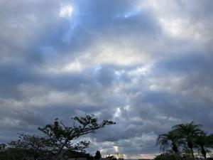
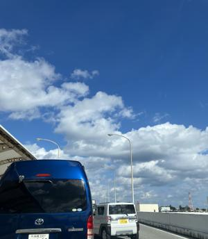

うるがいの話 ある日
最新: あれから３０年【うるがいの話 ある日】とは 一日だけのプログです
『うるがいの話』の最新一日だけのプログで、通信料が少なく経済的だ。カニの画像をクリックすると全ての日付が載る『うるがいの話』サイトを表示します
|
|
【うるがいの話】 うるがい(ｳﾙｶﾞｲ urugai)とは、『もずくがに』の名前でとても大きくなります。 |
|---|---|
|
|
【カミマヤーの話】 猫のことを方言でマヤーといいます。カミマヤー（kamimayaa）とは、神の猫のことです。 |
|
【たながぁの音楽】 たながぁ（ﾀﾅｶﾞｰ tanagaa）とは手長えびのことで、何種類かあり大きいのは車 エビぐらいになります。 |

|
【ぶながぁの話】 ぶながぁ(ﾌﾞﾅｶﾞｰ bunagaa)とは、赤い髪の毛、赤い身体、そして身長は１ｍ２０ｃｍ ぐらい、川の蟹を食べているの目撃された。場所は沖縄県国頭郡大宜味村のと ある村僕の隣近所に住んでいる爺さんから、聞いた話です。 |
|
|
【ギーマの話】 ギーマ(giima)とは、山原の里山に咲くスズランに似た、 花を付けます。実は食べられます、 気が付くと口の周りが紫になっています。 |
2025年01月17日 (金）あれから３０年
15:07

１９９５年（平成７年）１月１７日は、風邪のため那覇市国場のこ
くら台ハートクリニック（内科）の待合室で、朝早く地震のテレビ
を見てました。やばいことになっていると（以前は風邪で、病院へ
行っていた）
それからのち、大阪城公園の近くにある研修の場所へ移動中に、道
路で新人の頃のトレーナーのスズキさんにあった。地震で、壁の塀
が倒れ人身事故になってしまい今、裁判中だと話していた。
社会人２年目に、プロジェクトリーダー吉田さんの家（神戸三宮駅
周辺に一軒屋）に泊めてもらったことがある。全壊だと聞いた。
あれから、３０年。その後、東日本大震災、去年の能登半島地震が
起きた。

コドモが内地へ行くため、空港まで送る。災害に注意してと言う。
コドモが内地へ行くときは、毎回ヨメがポーク卵おにぎりを作って
持たせる。今日は、私が作る。事前にネットをみてお勉強したのだ
が、見栄えが・・・ネ。マ、食べればいいし。
かなり、左手は回復しているのか、夕食はヨメが、左手をかばって
いるグローブみたになものを外して作っている。私は、夕食一回だ
けの経験で済んでいる。ヨシヨシ